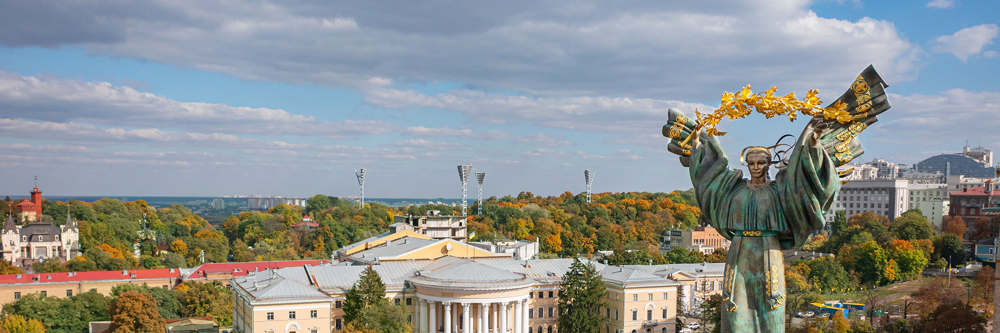

Все про Україну
Найцікавіші факти про Україну
Центр Європи - місто Рахів.
Українське містечко Рахів, розташоване серед Карпат, офіційно вважається географічним центром Європи. А сама Україна є найбільшою європейською державою, уся територія якої географічно розташована в Європі.
Українському Тарасу Шевченку встановили найбільшу кількість пам’ятників у світі.
В Україні та світі нараховується 1384 пам’ятники Тарасу Шевченку. Це найбільша у світі кількість монументів, які встановили діячу культури.
Найбільша пустеля Європи знаходиться в Україні.
Найбільша пустеля в Європі знаходиться на півдні України. Це Олешківські піски, розташовані в 30 км на схід від Херсона. І є найбільшим піщаним масивом в Європі.
Перша у світі конституція створена в Україні.
Вона була розроблена і введена в дію в 1710 році українським гетьманом Пилипом Орликом. Документ мав на меті запровадити поділ влади. У ньому окреслили обов’язки та права як громадян, так і уряду.
В Україні відкрили перший університет Східної Європи.
Острозька академія — найстаріший науково-освітній заклад в Україні та перший вищий навчальний заклад у Східній Європі. Слов’яно-греко-латинська академія була заснована в Острозі в 1576 році князем Костянтином-Василем Острозьким.
Незалежність України за два місяці визнали понад 90 країн світу.
У перші тижні після референдуму незалежність України визнали Угорщина, Литва, Латвія, Болгарія, Естонія, Чехословаччина, Швеція, Ізраїль, Швейцарія. До цього списку 25 грудня приєдналися США. А після цього одна за одною Україну почали визнавати такі впливові держави як Німеччина, Франція, Великобританія. До кінця січня 1992 року цей список налічував більше, ніж 90 країн світу, зокрема всі країни НАТО і ЄС.
Історія України
ДАВНЯ ІСТОРІЯ УКРАЇНИ
Давня історія України охоплює період, який розпочався з часу зникнення неандертальців і тривав до появи історичних слов'ян. Бронзовий вік тривав на землях України понад дві тисячі років, з другої половини IV до кінця ІІ тис. до Р.Х. У степах змінювали одна одну культури народів, які вели напівосілий, а часом і кочовий спосіб життя ...
КОЗАЦЬКА ДОБА - СТАНОВЛЕННЯ УКРАЇНИ
Одні з найдавніших на сьогодні писемних згадок про українське козацтво за 1489 та 1492 роки переконливо засвідчили його запеклу боротьбу з войовничими турками і татарами, яка продовжувалася протягом наступних століть. Запорозька Січ – це своєрідне військово-політичне утворення, яке виникло на південних землях України, і надалі було найхарактернішим проявом військової культури української нації. Із західним світом козаків поєднували такі елементи лицарства, як родинний принцип організації, побратимство, рівність, демократизм; морально-етичний кодекс поведінки воїна-січовика – мужність, відвага, вірність ...
СУЧАСНА УКРАЇНА
Сучасна Україна – це Україна XXI століття. Це – найбільша країна Європи, її географічний центр. Це – талановиті, працьовиті, хлібосольні люди. Це – багатовікова історія і споконвічне прагнення незалежності. Це – красива природа, багата культура і славні традиції. Українці - нація не по крові, а по духу. Адже на території України живуть понад 100 національностей, які люблять свою країну, захищають її, поважають, підтримують її культуру та історію. Багато українських письменників і митців, вчених і винахідників, військових ...
Географія України
Географічне положення України Україна знаходиться в центральній частині Східної Європи на перетинанні транспортних шляхів з Європою в Азію та зі Скандинавських країн у країни Середземноморського регіону. Велика частина території України розташована на південно-заході Східноєвропейської рівнини. Лише 5% займають гори: Українські Карпати – на заході і Кримські гори – на півдні. У Карпатах знаходиться найвища вершина України – гора Говерла (2061 м), найвища точка Кримських гір – гора Роман-Кіш (1545 м). У межах кордонів України довжина берегової лінії Чорного моря складає понад 1500 км. Морські береги на території України переважно положисті (за винятком району Кримських гір). Температура води в узбережжі взимку коливається від 0° до +8 °С, улітку – досягає +25 °С. Берега Азовського моря низинні, прямі, з характерними піщаними косами. Азовське море неглибоке, узимку вода біля берегів замерзає. Температура поверхні води влітку досягає +25° – +30 °С. В Україні налічується понад 73 тис. річок. Більшість річок України відносяться до басейнів Чорного й Азовського морів. Лише Західний Буг й інші праві притоки Вісли відносяться до басейну Балтійського моря. Найбільші ріки – Дніпро і Дунай – є судноплавними. На території країни розташовано понад 20 тис. водойм, з них більше 3 тис. – озера. Знаходяться вони переважно на Поліссі, в Причорноморській низовині й у Степовому Криму.